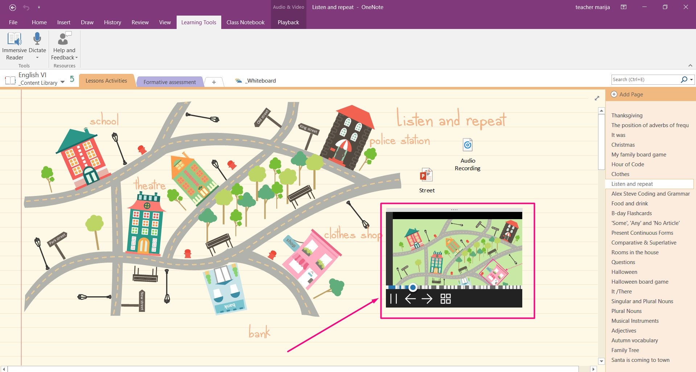
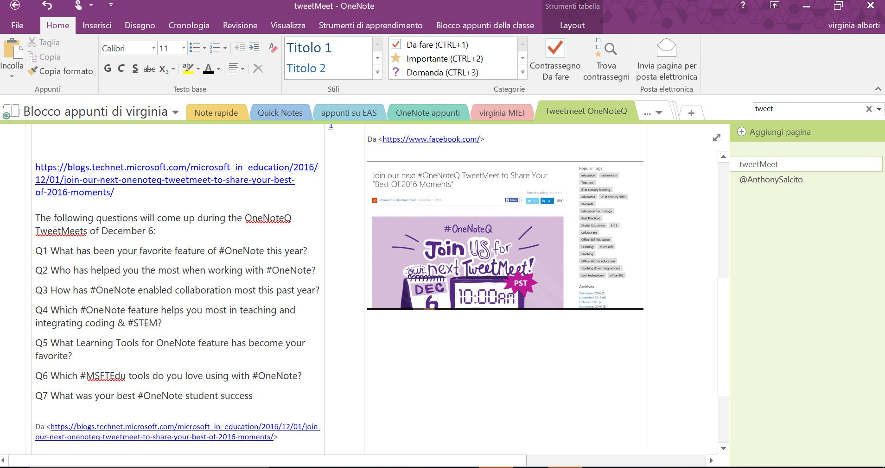
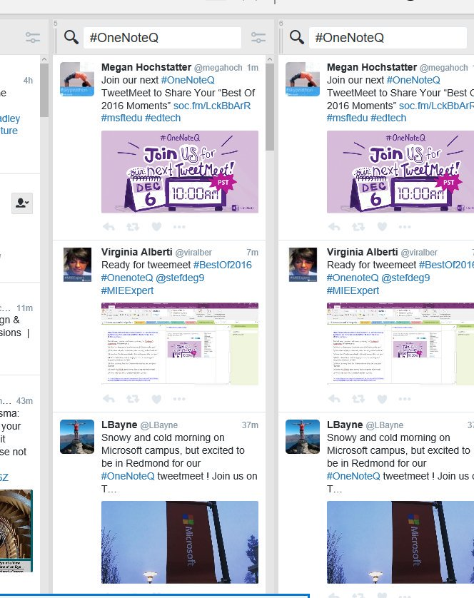
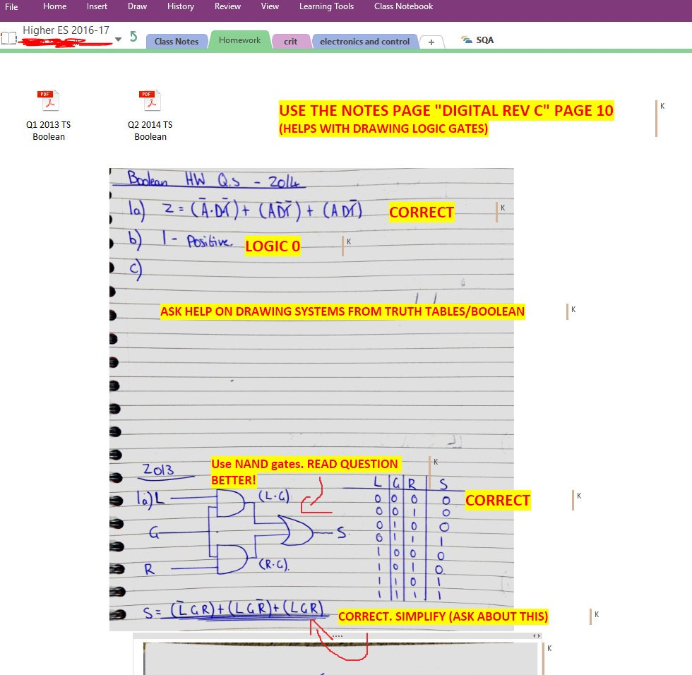

- Join our next #OneNoteQ TweetMeet to Share Your “Best Of 2016 Moments” http://soc.fm/Zyta8sL7 #msftedu #edtech pic.twitter.com/XYPAYThYTE
- Join our next #OneNoteQ TweetMeet to Share Your Best Of 2016 Moments During 2016, the OneNote team launched... http://fb.me/37ou6LYdJ
- #onenoteq 6. Office @OfficeMixTeam my fav @sway too, not to mention #Officelens pic.twitter.com/1Mb9CeOD1R
- Join our next #OneNoteQ TweetMeet to Share Your “Best Of 2016 Moments” http://soc.fm/XHA9RHsF #msftedu #edtech pic.twitter.com/DnVH7jpXO7
- Tons of new #OneNote features were released this past year. Check this #Bestof2016 overview http://onen.link/onenote-bestof2016 … #OneNoteQ
- Get ready--almost time for #OneNoteQ Best of 2016 TweetMeet. First time joining in? Use these tips to get started! http://msft.it/60178JeFb pic.twitter.com/cWZCLYmQ4y
- Ready? #OneNote teams and #MIEExpert educators are excited to engage with you on the #BestOf2016! #OneNoteQ pic.twitter.com/ofsdWRWvsr
- Snowy and cold morning on Microsoft campus, but excited to be in Redmond for our #OneNoteQ tweetmeet ! Join us on T… pic.twitter.com/nF5INGdxmJ
- 
- Join our next #OneNoteQ TweetMeet to Share Your “Best Of 2016 Moments” http://soc.fm/LckBbArR #msftedu #edtech pic.twitter.com/YxshKEJEdI
- ready for the #OneNoteQ tweet meet! I'll be there, ready to chat #edtech #mieexpert #edtechat @OneNoteEDU @stefdeg9 @Fed_Amm @baby_1712 pic.twitter.com/7bvnI8m6Jp
- T minus 7 minutes until the #OneNoteQ TweetMeet, what will you learn today? https://twitter.com/megahoch/status/806192656359555076 …
- Proudly announcing our first #OneNoteQ TweetMeet host #MIEExpert @Sfm36 The floor is yours in just a few minutes, Sarah! pic.twitter.com/YcTxPUb1Rz
- We're so excited to have you join the #OneNoteQ TweetMeet. We'll be talking #BestOf2016 of #OneNote today! pic.twitter.com/faFhfeuh1v
- Welcome, @Sfm36 as host for our last #OneNoteQ of the year! Join us for #Bestof2016 today at 10AM and 4PM! #msfteduchat pic.twitter.com/PjFp4hIyvw
- @IanStuart66 welcome to our #OneNoteQ Tweetmeet! thanks for joining!
- Kom igjen folkens, si hallo! :) #OneNoteQ https://twitter.com/Sfm36/status/806197409688719360 …
- A1: Here's @teachermarija's response to #OneNoteQ Q1, retweeted on request in her absence: https://twitter.com/teachermarija/status/806122897274208256 …
- TweetMeet tips: start your tweet with A1..A7, include the #OneNoteQ hashtag and set up @TweetDeck. pic.twitter.com/GddadVsp5k
- Q1: What has been your favorite feature of #OneNote this year? #OneNoteQ #BestOf2016 pic.twitter.com/aoItg70nb6 #edchat #edtech
- SimpleK12: RT Microsoft_EDU: RT OneNoteEDU: The #OneNoteQ TweetMeet is underway! Come hear from experts about the … pic.twitter.com/r8gNJiarto
- TweetMeet tips: start your tweet with A1..A7, include the #OneNoteQ hashtag and set up @TweetDeck. pic.twitter.com/EBvi1xRjle
- @tomgrissom Thanks for joining our #OneNoteQ Tom! The possibilities are endless with OneNote. ☺
- @MissGEnrique We're happy to have you! What inspired you to join us today? #OneNoteQ
- I had a feeling Microsoft Learning Tools will be a hot topic for #bestof2016 in our #ONeNOteQ Tweetmeet #edchat today! #edtech https://twitter.com/viralber/status/806198564389027840 …
- @a_minshall @CALLScotland's Scottish Voice is great Particularly with Learning tools http://www.thescottishvoice.org.uk/home/ #OneNoteQ A1
- A1 Also love been able to use my #Surfaceedu to Ink directly into OneNote and to let pupils try out new tech #OneNoteQ
- Q2: Who has helped you the most when working with #OneNote? #OneNoteQ #BestOf2016 pic.twitter.com/0sYu7gUiqJ #edtech
- @MissGEnrique I love that as well :) #OneNoteQ
- Thank you @IanStuart66 for introducing me to it #OneNoteQ https://twitter.com/IanStuart66/status/806199379614924800 …
- A2: Here's @teachermarija's response to #OneNoteQ Q2, retweeted on request in her absence: https://twitter.com/teachermarija/status/806123018347048960 …
- @OneNoteEDU Amazing how it can help struggling readers with comprehension #OneNoteQ
- @gericoats are you embedding video links or adding your own videos geri?#onenoteq
- @OneNoteEDU you have made our lives so much easier this year so I just wanted to share it with everyone 😊 #OneNoteQ
- New feature here. Has anybody else used? #onenoteQ https://twitter.com/screenbeam/status/806199723405164548 …
- #onenoteq A2 @kurtsoeser @zelfstudie @OneNoteC for Onenote app embedded GeoGebra worksheet and for digital inking @surface
- Q2 Shout out to @mtholfsen @davidzepol @LBayne for helping me learn more about #OneNote Thank you, Nancy #onenoteq
- @MissGEnrique feature I love #OneNoteQ
- Q3: How has #OneNote enabled collaboration most this past year? #OneNoteQ #BestOf2016 pic.twitter.com/YUvHgrk21X #edchat #edtech
- @tomgrissom I've marked up an exam paper with digital ink so they can do ink replay feedback for each answer #OneNoteQ
- I do this regularly in class #OneNoteQ https://twitter.com/mrs_stem/status/806201225532342272 …
- A3 OneNote allowed me to share a workbook with another school, ss researched the q's and fed back to my pupils via @SkypeClassroom #OnenoteQ
- .@MissGEnrique so many #Bestof2016, cannot forget about Class Notebook https://docs.com/dr-grissom/5099/pedagogy365-onenote-class-notebooks-a-game-changer … #OneNoteQ
- A3 this is great for STEM learning and I love it #OnenoteQ https://twitter.com/neilingram1/status/806201495947538432 …
- @NeilIngram1 #Onenoteq I do that with my grade 7 😃
- .@Sfm36 Here's a link to the free @khanacademy app in the Microsoft store #OneNoteQ https://store.office.com/en-in/app.aspx?assetid=WA104320031&sourcecorrid=24948ab7-5d41-4d70-978c-61eaafeb9be3&searchapppos=2&ui=en-US&rs=en-IN&ad=IN&appredirect=false …
- @NeilIngram1 Check out this great Sway from @DaveDelGobbo on Class Notebooks and 3D printing https://docs.com/delgobbo/6985/3d-printed-problem-solving-student-work-samples?c=4ULuZm … #OneNoteQ #STEM
- #OneNoteQ @NeilIngram1 awesome #STEM resources in OneNote here: http://ln.is/www.microsoft.com/en/EYuZ5 … #EDCHAT- let me know what ya think! #CSEdWeek
- @tomgrissom I agree. As teachers it helps us stay organised in many different ways #OneNoteQ
- #OneNoteQ Presenting partly on #Office365 and #OneNote at an event tomorrow Could u add some info to this NoteBook https://1drv.ms/u/s!Au_cE6md-o9IqkvkfET40ajCN2EJ …
- @GarethSurgey how are you using it? #OneNoteQ
- This autumn I've trained my colleaques how to use #classnotebook and # staffnotebook. They all are loving it. It's excellent! #OneNoteQ
- Well done excellent work way to share and show others how to use #OneNoteQ 👍🏻 https://twitter.com/pusajuha/status/806202682696499200 …
- A3: Peer review and pupils reflecting on their learning #OneNoteQ #BestOf2016 #edchat #edtech #OneNoteQ pic.twitter.com/m3dOSHb1qo
- Q2: Who: @ivarberg @steffisteaching and my students has helped me the most when working with #OneNote? #OneNoteQ #BestOf2016 #edtech
- @tomgrissom Love inserting meeting details from Outlook! #OneNoteQ
- Q4: Which #OneNote feature helps you most in teaching and integrating coding & #STEM? #OneNoteQ #BestOf2016 pic.twitter.com/jps4oF82LN #edchat
- A4: Here's @teachermarija's response to #OneNoteQ Q4, retweeted on request in her absence: https://twitter.com/teachermarija/status/806123808730005504 …
- a view-only #OneNote notebook link is so useful for quickly sharing information https://docs.com/dr-grissom/5556/pedagogy365-magic-view-only-onenote-notebook … plus constant updates #OneNoteQ https://twitter.com/viralber/status/806203028592361476 …
- @GarethSurgey Wow! That is powerful! #OneNoteQ
- A4: The ability to collaborate. Pasting starter code in content library and watching them process. Nothing beats it. #OneNoteQ #MIEExpert
- A4 great way to collect data when out in the field #stem #MIEExpert #onenoteQ https://twitter.com/tomgrissom/status/806204956072116224 …
- Q5: What Learning Tools for OneNote feature has become your favorite? #OneNoteQ #BestOf2016 pic.twitter.com/A8HObDHU6C #edchat #edtech
- .@steffisteaching @GarethSurgey Yeah, and students reflecting on their learning is a rewarding experience too #OneNoteQ
- the ultimate teaching & learning experience, wireless video with #digital_ink enabled by #Surface tablet & camera for learning #OneNoteQ https://twitter.com/IanStuart66/status/806204238942633984 …
- A5: Here's @teachermarija's response to #OneNoteQ Q5, retweeted on request in her absence: https://twitter.com/teachermarija/status/806124476316389376 …
- MT: PusaJuha Thanks for sharing! We are so glad you joined the #onenoteq TweetMeet today! https://twitter.com/Microsoft_EDU/status/806204719211352064 … via Microsoft_EDU - www.…
- A4 #OneNoteQ - check out our #MinecraftEdu in OneNote here great to kick of Hour of Code http://ln.is/microsoft.com/KVBfW … #MSFTEdu Edtech #CSEdWeek
- @MissGEnrique What do you use it for? Do you have any tips for teachers? #OneNoteQ
- @MissGEnrique It's one of my favourites too! #OneNoteQ
- @tomgrissom What do you mean? #OneNoteQ
- @kurtsoeser you are a guru of math Onenote #onenoteq
- SO true! #OneNoteQ One of my fav #Bestof2016 moments was your coverage on @geogebra integration with OneNote @kurtsoeser ! edchat #edtech https://twitter.com/viralber/status/806206760327540736 …
- @MissGEnrique Love that idea! Thank you for sharing :) #OneNoteQ
- @nate_bowling @ZahavaEdBuild @npr_ed @VisionsOfEd Just kindly pointing out that there's a #OneNoteQ TweetMeet going on right now. Welcome!
- Q6: Which #MSFTEdu tools do you love using with #OneNote? #OneNoteQ #BestOf2016 pic.twitter.com/Fn95tHkCKg
- @steffisteaching Very good too for when you feel a bit lazy and don't want to type 😉 #OneNoteQ
- Yes, I agree that they are easy to get to know - and love :) #OneNoteQ https://twitter.com/andrewkbailey13/status/806207301254348800 …
- @tomgrissom We're getting better dictation results when students using Windows 10 with OneNote 2016 than previous versions. #OneNoteQ
- A6: Here's @teachermarija's response to #OneNoteQ Q6, retweeted on request in her absence: https://twitter.com/teachermarija/status/806125697165094912 …
- A6 Embedding Online Videos & Microsoft Forms into OneNote (or Sway)- a Powerful One-Two Pedagogical Punch https://docs.com/dr-grissom/5578/pedagogy365-a-powerful-one-two-pedagogical-punch … #OneNoteQ
- .@steffisteaching audio is pristine, no background noise, rate of speaking also a factor #OneNoteQ
- @OneNoteC @teachermarija I totally agree! @OfficeMixTeam + @sway are perfect companion for #onenote #OneNoteQ
- A6 #officelens is so handy and such a timesaver, I use it more and more each day! #OneNoteQ
- I'm agree #onenoteq @tomgrissom very useful and friendly with the informal learning od my students https://twitter.com/tomgrissom/status/806208134062678016 …
- Q7: What was your best #OneNote student success moment this past year? #OneNoteQ #BestOf2016 pic.twitter.com/tbj4PGEjHr
- Thanks for sharing! How are things going in Albania? Presentation looks great! We certainly missed ya in our #OneNoteQ TweetMeet today! https://twitter.com/teachermarija/status/806209377715818496 …
- A6 Adding #Windows10 wireless display to #OneNote makes it easier to collaborate as Ts present lessons http://go.actiontec-info.com/EduTrial-IMC #onenoteq pic.twitter.com/QSo5i2jv3k
- @Mrs_L_Doran Thank you for joining our #OneNoteQ! Which features are most helpful for your students in Class Notebook?
- Enjoying Cheese and Wine at @ZHotelGlasgow while doing the #OneNoteQ Tweetmeet https://twitter.com/ZHotelGlasgow/status/803587892111085568 …
- shhh, @Sfm36 the secret is getting out ;) http://eiuitc.blogspot.com/2014/10/day-23-top-secret-shhh-onenote-is-one.html … #OneNoteQ #Bestof2016 #edtech
- @OneNoteEDU @OneNoteEDU the different ways to give feedback. They also like seeing other group's work in the collaboration space. #OneNoteQ
- Håper mange kan bli med, ser frem til å høre fra dere alle! #OneNoteQ @marte_bjerke @mallyjohnsen @eivstra @mettehelgesen @synnovar https://twitter.com/Sfm36/status/806211722944151553 …
- @Microsoft_EDU It depends! Normally a mix of both #OneNoteQ
- RT Microsoft_EDU: In case you missed the #OneNoteQ TweetMeet this morning, tune in today at 4 PM PT for our next s… https://twitter.com/i/web/status/806212732701855744 …
- Great way to gather evidence #OneNoteQ https://twitter.com/mrs_l_doran/status/806212839442706440 …
- That is a really good idea! #OneNoteQ https://twitter.com/mallyjohnsen/status/806212248943423492 …
- @PriyaAlphonse Thanks for joining the #onenoteq TweetMeet today! Will you join for the 4pm PT session?
- #OneNoteQ Pls add info to the shared Notebook http://bit.do/onenoteslf for my #EdTechScot conf tomorrow #OneNote #MIEExpert
- SimpleK12: RT Microsoft_EDU: In case you missed the #OneNoteQ TweetMeet this morning, tune in today at 4 PM PT for… https://twitter.com/i/web/status/806212732701855744 …
- MT: PriyaAlphonse Thanks for joining the #onenoteq TweetMeet today! Will you join for the 4pm PT session? https://twitter.com/Microsoft_EDU/status/806213478860124160 … via Micr…
- Thanks to everybody who joined in and helped me host my first #OneNoteQ tweetmeet. Hope you all enjoyed it #MIEExpert
- MT: Sfm36 Thank you for hosting our #onenoteq TweetMeet today! https://twitter.com/Microsoft_EDU/status/806215625202946048 … via Microsoft_EDU - http://www.tceamg.org
- Join in at 4pst for next #OneNoteQ tweet meet and you too might pick up a few tips to help in your class 👍🏻 #MSFTEDU #MIEExpert #edtech https://twitter.com/priyaalphonse/status/806217377801084928 …